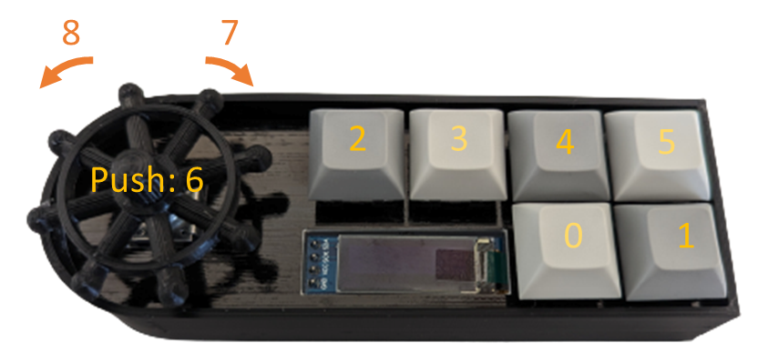

Combine keys with | (hotkey), chain hotkeys with ~ (sequence),
and type text as-is with 'quotes'.
See the full macro grammar on
the help page.
Open the CIRCUITPY drive of your Voyager Pad to edit its settings.json.
If the file does not exist yet, a blank one is created for you.